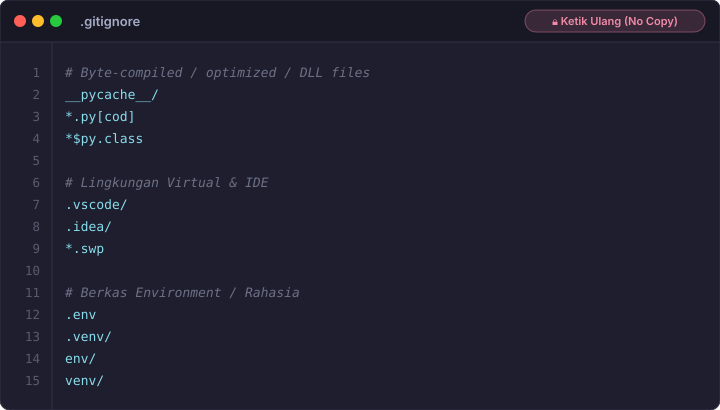
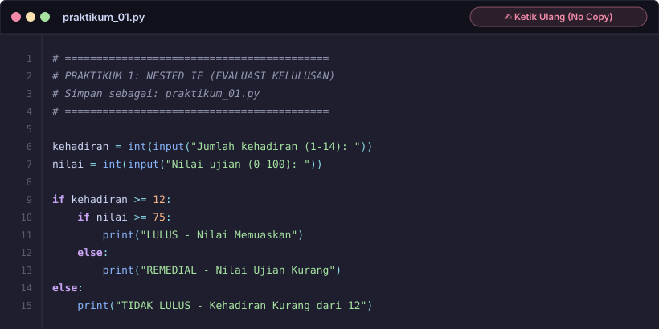
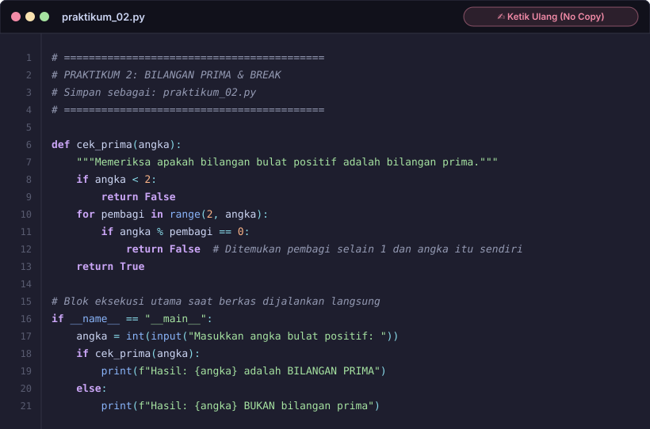
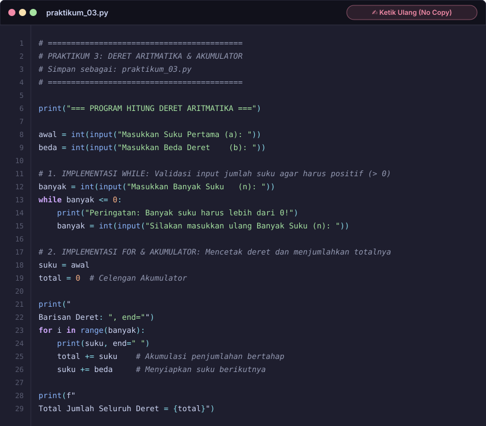
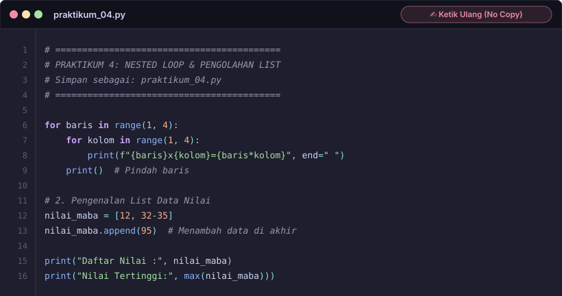
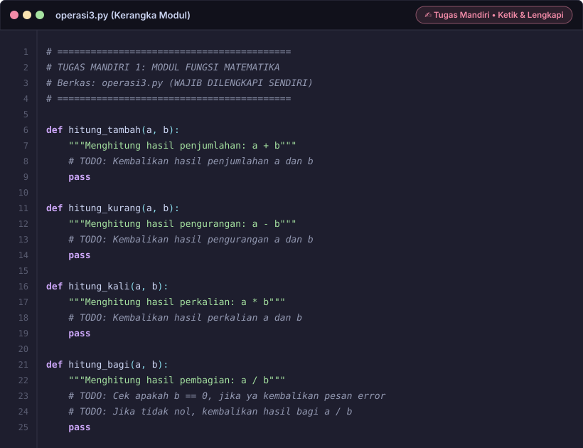
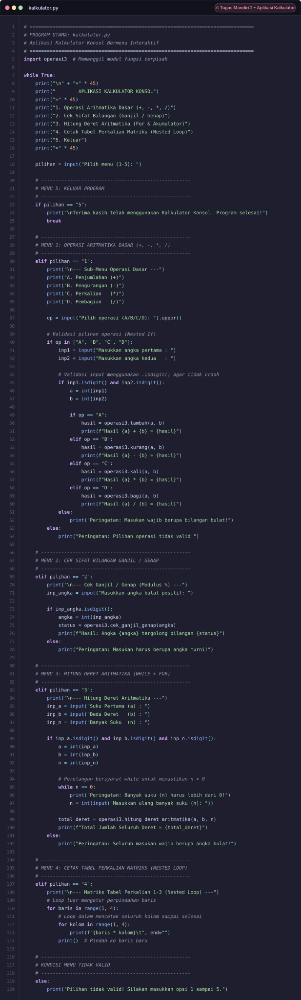

TATA TERTIB & ATURAN RESMI: DILARANG CURI START!
- Tombol Salin Ditiadakan: Kode sengaja disajikan dalam format kartu visual (SVG). Tidak ada tombol salin otomatis agar kalian mengetik ulang secara manual ke VS Code untuk melatih pemahaman dan indentasi.
- Tugas Mandiri (operasi3.py & kalkulator.py): Berisi modul fungsi logika matematika mandiri serta aplikasi kalkulator konsol interaktif bermenu yang mengimpor modul tersebut.
- Tunggu Aba-Aba Pemateri: Buka menu lipat (*drop-down*) hanya saat dipandu oleh dosen/asisten di depan kelas.
Mencegah berkas sampah cache internal Python dan preferensi teks editor terunggah ke repositori GitHub.
📄
Lihat Template Berkas .gitignore
Ketik Ulang
.gitignore

Konsep percabangan bersarang (*Nested If*), gerbang validasi bertingkat (Kehadiran $\rightarrow$ Nilai Ujian), dan pembungkusan fungsi modular.
🔒
[KLIK UNTUK MEMBUKA] Kode Praktikum 1
Wajib Tulis Ulang

💡 Poin Pembahasan Logika:
- Fungsi Modular
evaluasi_kelulusan(kehadiran, nilai): Mengembalikan status kelulusan. Fungsi ini nantinya akan diimpor dan dipanggil oleh tugas mandiri. - Pintu Luar (
if kehadiran >= 12): Penyaring utama. Jika kehadiran kurang dari 12, nilai ujian tidak diperiksa lagi. - Blok
if __name__ == "__main__":: Menjaga agar kode input tidak otomatis berjalan saat modul diimpor oleh tugas mandiri.
Pengujian bilangan prima, operator modulus (%), dan optimasi penghentian perulangan seketika saat faktor pembagi ditemukan.
🔒
[KLIK UNTUK MEMBUKA] Kode Praktikum 2
Wajib Tulis Ulang

💡 Poin Pembahasan Logika:
- Fungsi
cek_prima(angka): Mengembalikan nilai boolean (True/False). - Eliminasi Angka < 2: Angka kurang dari 2 langsung dianggap bukan bilangan prima.
- Early Exit (Berhenti Cepat): Begitu sisa bagi nol (
angka % pembagi == 0), langsung returnFalsedetik itu juga.
Pola akumulator (celengan nilai), penambahan beda berulang, dan pengembalian multi-nilai (*tuple return*).
🔒
[KLIK UNTUK MEMBUKA] Kode Praktikum 3
Wajib Tulis Ulang

💡 Poin Pembahasan Logika:
- Fungsi
hitung_deret(awal, beda, banyak): Mengembalikan list deret suku dan total akumulasi penjumlahan. - Akumulator (
total += suku): Setiap putaran perulangan, nilai suku dimasukkan ke dalam total akumulasi.
Perulangan bersarang 2D untuk tabel perkalian matriks, karakter escape tabulasi (\t), dan fungsi agregasi max().
🔒
[KLIK UNTUK MEMBUKA] Kode Praktikum 4
Wajib Tulis Ulang

💡 Poin Pembahasan Logika:
- Outer Loop & Inner Loop: Loop baris mengontrol pergerakan vertikal, loop kolom mencetak perkalian horizontal.
- Karakter Tabulasi
\t: Menyejajarkan posisi kolom angka secara rapi. - Agregasi
max(daftar_nilai): Mencari angka tertinggi secara instan.
Tugas Mandiri: Terdiri dari 2 berkas, yaitu modul fungsi logika & matematika mandiri (operasi3.py) dan program utama konsol bermenu interaktif (kalkulator.py) yang mengimpor modul tersebut serta mengimplementasikan perulangan while True, validasi input .isdigit(), dan nested loop matriks.
📦
Berkas 1: Modul Logika & Fungsi Matematika (operasi3.py)
Modul Fungsi
operasi3.py)

📋 Spesifikasi Fungsi Mandiri (operasi3.py):
tambah(a, b): Mengembalikan hasil penjumlahan $a + b$.kurang(a, b): Mengembalikan hasil pengurangan $a - b$.kali(a, b): Mengembalikan hasil perkalian $a \times b$.bagi(a, b): Mengembalikan hasil pembagian $a / b$. Menangani pencegahan error saat pembagi bernilai nol ("Error: Pembagi tidak boleh bernilai nol!").cek_ganjil_genap(angka): Memeriksa sifat bilangan ganjil/genap menggunakan operator modulus (%), mengembalikan"GENAP"atau"GANJIL".hitung_deret_aritmatika(awal, beda, n): Menghitung total akumulasi deret menggunakan perulanganfor.
💻
Berkas 2: Program Utama Konsol Bermenu (kalkulator.py)
Program Utama
kalkulator.py)

📋 Fitur & Logika Menu (kalkulator.py):
- Menu 1 (Operasi Aritmatika Dasar): Sub-menu A (+), B (-), C (*), D (/), validasi input menggunakan
.isdigit(), memanggil fungsi dari moduloperasi3. - Menu 2 (Cek Sifat Bilangan): Meminta input angka positif dan memanggil
operasi3.cek_ganjil_genap(angka). - Menu 3 (Hitung Deret Aritmatika): Meminta input suku awal, beda, dan banyak suku ($n$), validasi
while n <= 0, memanggiloperasi3.hitung_deret_aritmatika(). - Menu 4 (Cetak Tabel Perkalian Matriks): Mencetak matriks perkalian 1–3 menggunakan nested loop (loop baris dan kolom).
- Menu 5 (Keluar): Menampilkan pesan terima kasih dan menghentikan perulangan dengan
break.
Lakukan langkah-langkah di bawah ini secara disiplin untuk mengumpulkan hasil tugas ke GitHub organisasi.
cd tugas-minggu-2
nama-NPM & Berkas README.mdREADME.md dengan format wajib:cd ahmad-2610001
# Tugas Minggu 2 - Pelatihan Python Lanjutan & GitHub - **Nama** : [Nama Lengkap] - **NPM** : [NPM Mahasiswa] - **Kelompok** : [Nomor Kelompok] ## Daftar Berkas 1. `praktikum_01.py` : Latihan Percabangan Bertingkat (Nested If) 2. `praktikum_02.py` : Latihan Deteksi Bilangan Prima & Modulus 3. `praktikum_03.py` : Latihan Deret Aritmatika & Akumulator 4. `praktikum_04.py` : Latihan Matriks Perkalian & List 5. `operasi3.py` : Modul Operasi Matematika 6. `tugas3_menu.py` : Aplikasi Konsol Utama Kalkulator
git commit -m "feat: menyelesaikan modul latihan praktikum 1 sampai 4"
git add operasi3.py kalkulator.py
git commit -m "feat: menyelesaikan modul kalkulator dan program menu terpadu"
git add README.md .gitignore
git commit -m "docs: melengkapi dokumentasi dan konfigurasi gitignore"